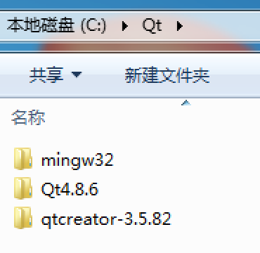
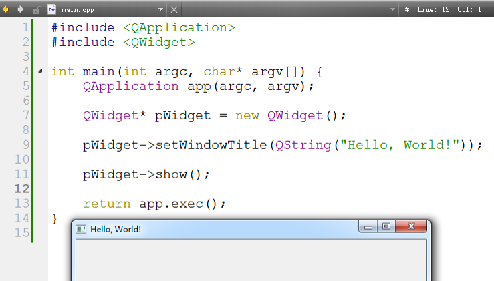
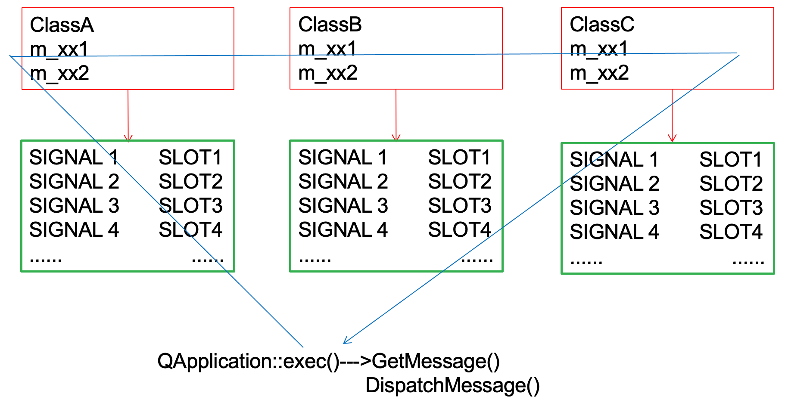
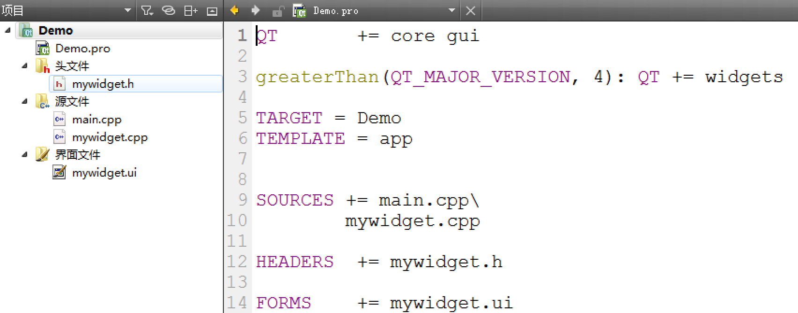
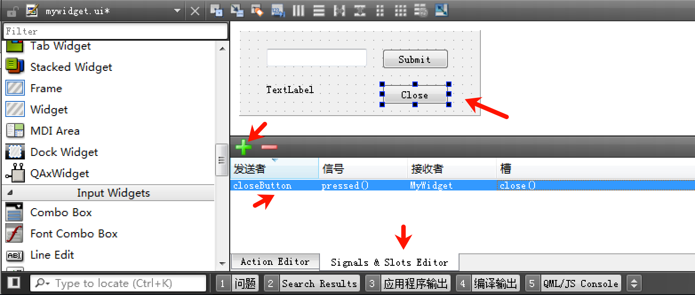
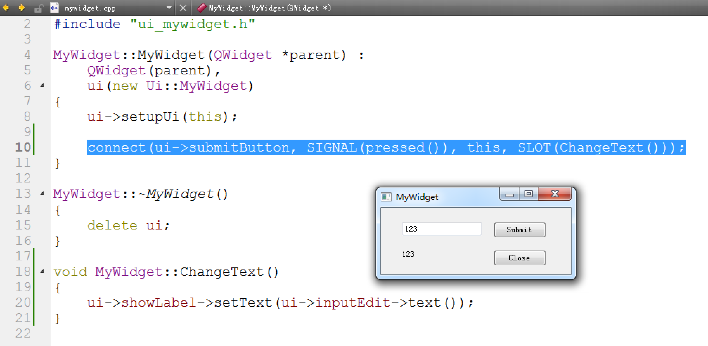

QT基础
Qt概述
Qt是用C++实现的一套库，也就表示其就是一堆代码，它不是IDE；Qt与MFC一样，它们都是C++语言实现的库，在库里提供了很多接口，使得开发的时候可以更加方便；Qt与MFC的实现原理不一样；Qt可以跨平台，但效率较低。
了解了Qt，就不得不了解一下Qt Creator，这是一个IDE，类似于VC6.0、VS等等。
Qt开发环境的配置
接下来我们要进行Qt开发环境的配置，我们需要下载与安装三个东西：
MinGW，这是一个编译器，下载地址：https://download.qt.io/development_releases/prebuilt/mingw_32/i686-4.8.2-release-posix-dwarf-rt_v3-rev3.7z
QtOpenSource，Qt的源代码，下载地址：https://download.qt.io/archive/qt/4.8/4.8.6/qt-opensource-windows-x86-mingw482-4.8.6-1.exe
QtCreator，IDE，要安装其需要去这个网址：https://login.qt.io/register注册账号，下载地址：https://download.qt.io/development_releases/qtcreator/3.6/3.6.0-rc1/qt-creator-opensource-windows-x86-3.6.0-rc1.exe
依次按照步骤配置安装即可，建议将这三个东西放在同一个目录下：

最后打开Qt Creator，需要如下图一样进行配置（工具-选项）：

第一个Qt应用
当你配置好之后，可以创建你的第一个Qt应用并直接启动它：

工程的创建及第一个程序
创建工程
之前我们已经创建了自己的第一个Qt应用，但如果学过MFC，理应知道，通过这种可视化去创建一个应用，会加入很多其他代码，不够纯粹，也不便于学习。
因此，我们需要如下图所示，创建一个空项目，然后添加C++源文件：

第一个程序
接下来我们就需要在C++源文件中使用纯代码的方式创建Qt应用：

#include <QApplication> // 代表应用程序本身，等价于MFC中的CWinApp、CMyWinApp#include <QWidget> // 表示窗口，等价于MFC中的CWndint main(int argc, char* argv[]) { QApplication app(argc, argv); // 初始化程序 QWidget* pWidget = new QWidget(); // 创建窗口 pWidget->setWindowTitle(QString("Hello, World!")); // 设置窗口标题，使用Qt中的字符串QString pWidget->show(); // 展示窗口 return app.exec(); // 运行程序}我们从MFC的角度来看Qt，你会发现，其实两者并没有什么不同，但从代码量以及整体结构的上来看，Qt显得更加简洁。
在Qt Creator中，你可以无需切换其他软件，直接查看相关的帮助信息（选中按F1）：

信号和槽
原理
在了解Qt的信号和槽之前，我们来回顾一下MFC的消息映射机制，其就是将自定义消息和对应的处理函数添加到消息映射表中，这样的方法很简单，并且可以很直观的便于寻找。


如上两张图所示，我们可以知道MFC的消息映射是静态的，这样做其实相对来说较为死板，无法动态的往消息映射表中添加和卸载，Qt的信号和槽正是为了解决这种问题而诞生的，如下图所示消息变成了信号，消息事件函数变成了槽。

如下图所示， 我们知道在MFC中要使用消息映射机制，首先要在类中声明DECLARE_MESSAGE_MAP宏，通用在Qt中你要使用信号与槽，需要声明Q_OBJECT宏：

在Qt中信号和槽是这样的运作流程：
首先需要知道哪个控件发出了信号；
其次需要知道发出了什么信号；
接着需要知道哪个控件接收这个信号；
最后需要知道这个信号应该调用什么功能函数（槽函数，与信号接收的控件绑定）。
这一套运作流程是通过QObject::connect方法进行动态链接的，同样你也可以通过QObject::disconnect方法进行动态卸载。
所以从本质上来看MFC和Qt都是对Win32中的消息及其处理函数进行了封装，但是Qt信号和槽相比较MFC的消息机制，使用起来更方便。
实操
在实操之前，我们先了解一下QObject::connect方法的语法：
bool QObject::connect ( const QObject * sender, // 信号发送者 const char * signal, // 信号：SIGNAL(pressed())，用SIGNAL宏加信号的事件方法 const QObject * receiver, // 信号接受者 const char * method, // 糙：SLOT(close())，用SLOT宏加处理对应信号的槽函数 Qt::ConnectionType type = Qt::AutoConnection // 默认有初始值，可不写)每个控件都有自己独有的信号和槽：

如下代码是创建两个按钮，pressed信号（按钮按下）链接了pWidget控件的close方法和showFullScreen方法：
#include <QApplication>#include <QWidget>#include <QPushButton>int main(int argc, char* argv[]) { QApplication app(argc, argv); QWidget* pWidget = new QWidget(); QPushButton* pCloseBtn = new QPushButton(pWidget); // 创建按钮，基于pWidget QPushButton* pFullScrenBtn = new QPushButton(pWidget); // 创建按钮，基于pWidget pWidget->setWindowTitle(QString("Hello, World!")); pCloseBtn->setGeometry(QRect(0,0,50,30)); // 设置按钮坐标和大小 pCloseBtn->setText(QString("Close")); // 设置按钮名字 pFullScrenBtn->setGeometry(QRect(100,0,80,30)); pFullScrenBtn->setText(QString("FullScreen")); pWidget->show(); pWidget->connect(pCloseBtn, SIGNAL(pressed()), pWidget, SLOT(close())); // connect方法 pWidget->connect(pFullScrenBtn, SIGNAL(pressed()), pWidget, SLOT(showFullScreen())); return app.exec();}关于其他的信号和槽可以查看Qt Creator的手册（选中按下快捷键F1）。
用QtDesigner来设计界面
接下来我们可以使用Qt Creator的QtDesigner来设计界面，这个跟MFC操作是差不多的，控件直接拖拽。
首先我们需要创建一个项目，按如下图所示创建：

接下来我们依次来看一下项目创建的几个文件：
Demo.pro → 编译程序所需的文件，其中包含了项目名称项目类型以及相关的源文件头文件和界面文件；
mywidget.h → 头文件，包含了派生类MyWidget的声明；
main.cpp → Qt应用的入口文件；
mywidget.cpp → 派生类MyWidget的方法的实现文件。
mywidget.ui → 界面文件。

头文件可以关注一下有几个有意思的东西，首先是在派生类中需要声明Q_OBJECT宏，其次需要添加一个界面集成管理的成员用于所有子控件的集中管理：

UI设计
我们可以通过双击界面文件或选择左边菜单栏的设计进行界面的设计：

我们可以从左边拖拽控件到界面上，对名字和显示文本进行修改：

添加信号和槽
添加信号和槽有两种方式 一种是使用可视化的方法，一种是使用代码去编写。
可视化操作
如下图所示我们可以直接在界面中去操作添加：

代码操作
我们想要当Submit按钮被按下从而改变TextLable的内容为输入框的内容，这时候需要编写代码，首先由于这个动作是我们自定义的，所以在头文件中需要声明一个私有的槽方法：
private slots: void ChangeText();其次我们需要在实现文件中实现这个方法：
void MyWidget::ChangeText(){ ui->showLabel->setText(ui->inputEdit->text());}接着在构造函数中使用connect连接信号和槽：
MyWidget::MyWidget(QWidget *parent) : QWidget(parent), ui(new Ui::MyWidget){ ui->setupUi(this); connect(ui->submitButton, SIGNAL(pressed()), this, SLOT(ChangeText()));}这样我们就可以完成整个需求了：
